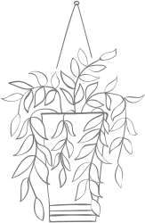

Истинное мастерство завода «Стальная линия» заключается в изготовлении нестандартных моделей. Индивидуальный заказ двери даёт возможность принять участие в производстве, стать частью команды инженеров и дизайнеров.
Менеджер в салоне подберёт форму, размеры и дизайн двери
На видео показываем, что менять можно почти всё: цвет и вид отделки, узор, ручки и замки, утепление. Дверь идеально дополнит дом или квартиру.
Верхний добор объединил два дверных полотна. Панели созданы по фирменной технологии завода — SteelTex, окрашены в цвет «Дуб тёмный», покрыты чёрной патиной.
Модель дополнена боковым добором с фрезеровкой. Декоративная решётка подчёркнута фурнитурой подходящего тона и служит акцентом отделки.
Создайте эскиз фрезеровки дверной панели — мастера завода изготовят по нему входную дверь.
Дополнена стеклопакетами и кованными решётками в чёрной кузнечной краске. Панели покрыты патиной, создают акцент для фасада частного дома.
Дизайнерская коллекция «Steel&Wood»
Изготовлена по технологии OakPanel, которая включает в себя процесс создания панелей из девяти слоёв дерева. Отделку модели подчёркивает изысканная фактура дуба.
Ручная окраска панели подчёркивает уникальный оттенок дуба, передаёт глубину цвета. Двери «Steel&Wood» ориентированы на установкув помещения классического стиля.
В любое окно или боковой добор двери можно установить витраж. Каждое окно прорисовывается отдельно, так какв зависимости от ширины стеклопакета меняется стандартный рисунок витража.
Меняйте комбинацию матовых стёкол, кромки и цвета витража, чтобы создать оригинальный дизайн окна входной двери.
Дополнена стеклянными вставками с оригинальным орнаментом. Благородный цвет отделки «Марсала» сочетается с дизайном стеклянных элементов.
Состоит из двух створок. Акцент отделки — встроенный стеклопакет с кованной решёткой и оригинальный цвет «Марсала» из палитры RAL.
Модель с боковыми доборами. Каждую часть полотна украшает встроенный стеклопакет с кованной решёткой.
Завод изготавливает двери с нестандартным конструктивом, фурнитурой и материалами.
Дверные панели можно окрасить в любой цвет из палитры RAL.
Наружные панели окрашены в чёрно-серый оттенок 7021.
Геометрическая фрезеровка подчёркнута белым цветом отделки и серебряной патиной. Дополнительный боковой добор установлен для широкого дверного проёма.
Ориентирована на установку в помещение с современным дизайном. Белый цвет визуально увеличивает пространство, стеклянные доборы и вертикальная ручка «вытягивают» модель.
Два полотна с фрезеровками в виде полукруга организовывают завершённый рисунок. Чёрная патина подчёркивает классические цвета покрытия.
Оригинальную фрезеровкуподчёркивает коричневыйцвет 8071 из палитры RAL.
Уникальная абстрактная фрезеровка — акцент внешней отделки. Дверные панели окрашены в чёрно-серый цвет.
Дизайнерская коллекция «Contemporary». Европейские материалы и окраска панелей создают дверь для яркой и комфортной жизни.
Менеджеры подберут надёжные замки и фурнитуру в цвет отделки двери.
Оригинальную фрезеровку подчёркивает коричневый цвет 8071 из палитры RAL.
Сочетает два независимых дверных полотна со стеклопакетами и стальными рамками.
Модель с боковыми доборами, стеклопакетами и накладками из нержавеющей стали.
Дополнена добором со стеклопакетом в стальной рамке. Акцент — оригинальный цвет наружной отделки двери из палитры RAL.
Панели, созданные по технологии SteelTex, устойчивы к ультрафиолету, влажности и перепаду температур.